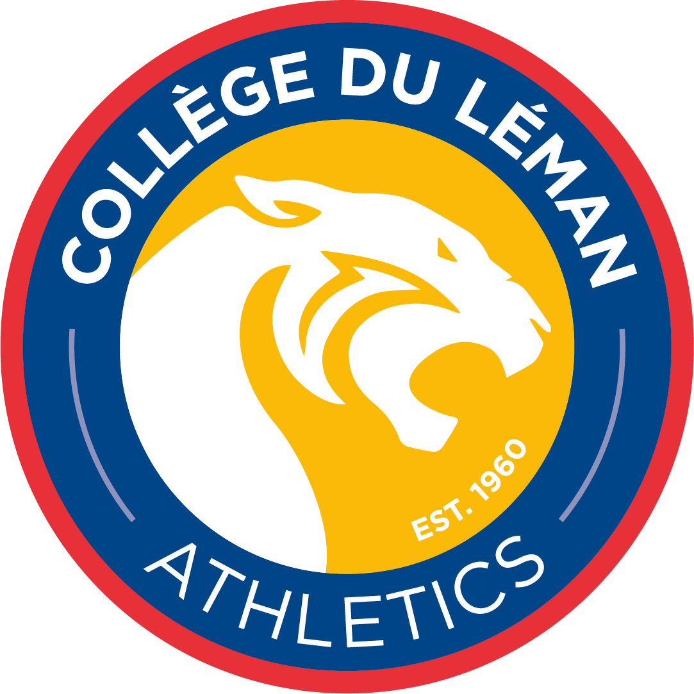

Question goes here
Note: If you're asking for a hint, you should probably come back here later to see if you can manage without one!

Note: If you're asking for a hint, you should probably come back here later to see if you can manage without one!